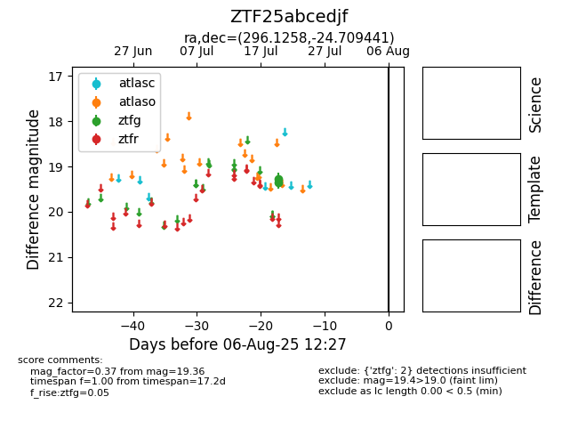

Target ZTF25abcedjf at 2025-08-06 17:27, see:
FINK: fink-portal.org/ZTF25abcedjf
Lasair: lasair-ztf.lsst.ac.uk/objects/ZTF25abcedjf
ALeRCE: alerce.online/object/ZTF25abcedjf
alt names
ZTF25abcedjf (ztf,fink)
coordinates:
equatorial (ra, dec) = (296.1258,-24.70944)
galactic (l, b) = (15.5389,-22.09489)
photometry
last ztfg=19.36
2 ztfg detections
